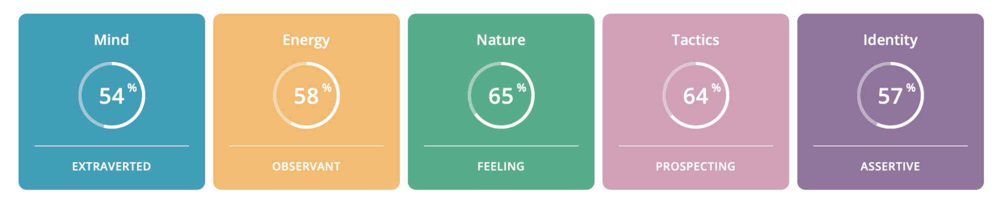
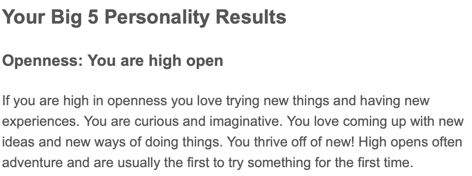
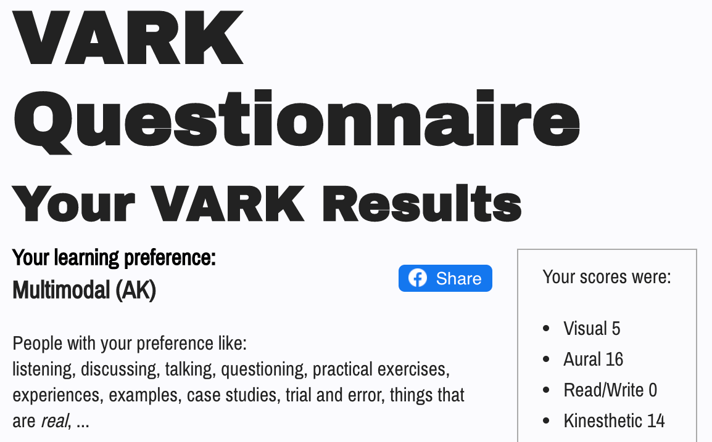

My name is Yu-Cheng Lai, and I was born in 2000 in Taiwan. I am currently a student of Bachelor of Information Technology at RMIT in Australia. Most of my time, I enjoy music and various forms of performing arts because I enjoy performing myself. I love making friends from around the world, but I can also be a little shy sometimes. I discovered my interest in IT and programming at the age of 19. I have little knowledge and experience in IT since I began exploring much later than many people in this same field. I’m now learning much more IT knowledge at RMIT and during my own time to work towards my ideal job, an IT administrator or a software manager.
These tests allow me to look in depth of who I am from a whole new perspective. I can see that I am strong in people mastery and learning with audio and practicing. These parts of me help me find people who are similar to me and work in teams in order to achieve the same goals. On the other hand, it highlighted my weakness in rational thinking, which implies that I need to chill sometimes.
  